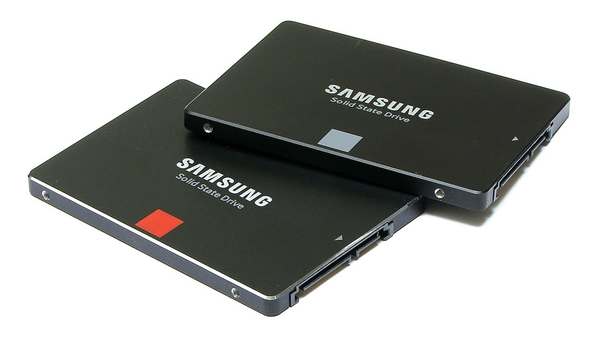

Processzorok (CPU - Central Processing Unit)
A processzor, más néven CPU, a számítógép „agya”. Ez végzi az összes számítást és koordinálja a különböző feladatokat, például programok futtatását, adatok feldolgozását és az eszközök irányítását. Egy CPU több maggal (core) is rendelkezhet, amelyek különböző feladatokat tudnak párhuzamosan elvégezni. A modern processzorok, mint például az **Intel Core i9** vagy az **AMD Ryzen 9**, akár 16 vagy több maggal is rendelkeznek, ami nagyobb teljesítményt nyújt játékokhoz, videószerkesztéshez vagy 3D tervezéshez.
A CPU két legfontosabb mutatója a **órajel (GHz)**, amely azt jelzi, milyen gyorsan tud dolgozni, és a **magok száma**, ami a párhuzamos feladatok kezelését mutatja. Egy többmagos processzor hatékonyabb a multitaskingban (pl. böngészés, zenehallgatás és videószerkesztés egyszerre), míg a magas órajellel rendelkező processzorok inkább egyetlen feladatot tudnak gyorsabban végrehajtani.
Videókártyák (GPU - Graphics Processing Unit)
A videókártya a képek, videók és játékok megjelenítéséért felelős. Ez különösen fontos a játékosok és a grafikus tervezők számára, mert a modern játékok és grafikai programok sok számítást igényelnek. A GPU több ezer kis magot tartalmaz, amelyek egyszerre tudnak komplex képi számításokat végezni. Az olyan kártyák, mint az **NVIDIA GeForce RTX 4090** vagy az **AMD Radeon RX 7900**, képesek valós idejű 3D grafikák megjelenítésére, ray tracing támogatással, amely a fény és árnyékok valósághű visszaadását teszi lehetővé.
A videókártyák memóriával (VRAM) is rendelkeznek, amely a grafikai adatok ideiglenes tárolására szolgál. A több VRAM-mal rendelkező kártyák jobban teljesítenek nagy felbontású játékok és videók esetén. Általában 8 GB VRAM már elegendő a legtöbb játékhoz, de a 4K játékokhoz és professzionális grafikai munkákhoz akár 12-24 GB VRAM is hasznos lehet.
Alaplapok (Motherboard)
Az alaplap a számítógép központi összekötő eleme, amely lehetővé teszi, hogy a különböző alkatrészek (pl. processzor, memória, tárhely, videókártya) együttműködjenek. Az alaplap típusa meghatározza, milyen komponensek csatlakoztathatók hozzá, például milyen típusú és sebességű processzor, memória, valamint a bővítőhelyek számát, mint a PCIe slotok a videókártyák számára.
Modern alaplapok támogatják az **M.2** csatlakozókat, amelyek lehetővé teszik a gyors SSD-k használatát, valamint a **USB-C** portokat, amelyeket az újabb eszközökhöz csatlakoztathatunk. Az alaplapokhoz általában BIOS vagy UEFI is tartozik, ami egy egyszerű szoftver, ami lehetővé teszi a hardverbeállítások módosítását, mint például a ventilátor sebességét vagy a CPU túlhajtását (overclocking).
Memória (RAM - Random Access Memory)
A RAM egy gyors, rövid távú memória, amely a futó programokat és adatokat tárolja. Amikor megnyitsz egy programot vagy fájlt, az ideiglenesen a RAM-ba kerül, hogy gyorsan hozzáférhető legyen. Minél több RAM van a számítógépedben, annál több programot tudsz egyszerre futtatni anélkül, hogy a gép lassulna.
**8 GB RAM** általában elegendő a hétköznapi használatra, mint a böngészés vagy irodai feladatok. Azonban játékosoknak és videószerkesztőknek érdemes legalább **16 GB** vagy akár **32 GB RAM-ot** használni, hogy a nagyobb igényű programok is zökkenőmentesen fussanak.

Tárhely: SSD és HDD
A tárhely két fő típusa van: a hagyományos **HDD** (merevlemez) és a modern **SSD** (szilárdtest-meghajtó). A HDD egy mechanikus meghajtó, amely mágneses lemezekre írja az adatokat. Előnye, hogy olcsóbb, de lassabb, mint az SSD. Az SSD viszont gyorsabb, mert nem tartalmaz mozgó alkatrészeket, és sokkal gyorsabban hozzáfér az adatokhoz, például a rendszerindítás vagy fájlok megnyitása során.
Ha a sebesség a fontos, például gyors rendszerindítást és programbetöltést szeretnél, akkor érdemes egy **500 GB vagy 1 TB SSD-t** választani az operációs rendszerhez és a leggyakrabban használt programokhoz. Adattároláshoz, mint például filmek és képek, a nagyobb kapacitású **HDD** (pl. 2-4 TB) a jobb választás, mert költséghatékonyabb.

Tápegység (PSU - Power Supply Unit)
A tápegység (PSU, azaz Power Supply Unit) egy olyan eszköz, amely a számítógép vagy más elektronikai berendezés számára biztosítja a megfelelő feszültséget és áramot. Az áramforrásból érkező váltakozó áramot (AC) alakítja át olyan egyenárammá (DC), amelyre a számítógép alkatrészeinek (pl. alaplap, CPU, GPU, merevlemez stb.) szüksége.